Adaptive Frequency Sweeps for Driven Simulations
Palace has two modes for frequency-domain driven simulations: uniform and adaptive. The uniform solver runs one full finite-element solve per output frequency. The adaptive solver runs a much smaller number of full solves, constructs a projection-based reduced-order model (PROM), and evaluates that model over the requested output grid.
The adaptive solver can be much faster than the uniform solver on fine frequency grids, but it introduces an approximation error that should be controlled and validated for the quantities of interest. The implementation details are described in the adaptive driven solver reference. This page focuses on practical setup and validation.
Adaptive driven sweeps rely on algorithmic choices inside Palace. They are useful and efficient, but users should validate them against uniform sweeps when studying a new model or a new output quantity.
Quick start
The only configuration difference between uniform and adaptive driven sweeps is the value of config["Solver"]["Driven"]["AdaptiveTol"]. The default value is 0.0, which uses the uniform solver. Any positive value enables the adaptive solver.
"Solver": {
"Driven": {
"Samples": [ {"Type": "Linear", "MinFreq": 3.5, "MaxFreq": 7.0, "FreqStep": 0.1} ],
"AdaptiveTol": 1e-3
}
}The "Samples" specification defines the output frequency grid for both solvers. For the adaptive solver this grid can usually be fine, since adding output frequencies is much cheaper than adding full finite-element solves. The output files, such as domain-E.csv and port-S.csv, have the same format in both modes.
When studying a new model, a good workflow is:
- Run a uniform sweep on a coarse output grid or at key frequencies.
- Run the adaptive solver on the same grid and compare the quantities you care about.
- Tighten tolerances, add validation frequencies, or fall back to the uniform solver if the adaptive result is not accurate enough for the application.
- Once validated, run the adaptive solver on the desired fine output grid.
Tuning parameters
The most important configuration options are:
config["Solver"]["Driven"]["AdaptiveTol"]: adaptive convergence tolerance. A value around1e-3is often a reasonable starting point for S-parameter sweeps, but the right value is model- and quantity-dependent.config["Solver"]["Linear"]["Tol"]: linear solver tolerance for the underlying full solves. This should usually be substantially smaller than"AdaptiveTol". If Palace logs warnings about a rank-deficient minimal rational interpolation, try tightening this tolerance or using a looser"AdaptiveTol".config["Solver"]["Driven"]["AdaptiveMaxSamples"]: maximum number of full samples per excitation. If this cap is reached before convergence, increase it or revisit the tolerances.config["Solver"]["Driven"]["AdaptiveConvergenceMemory"]: number of consecutive successful sample checks required before convergence. Increasing this can make early termination less likely, at the cost of more full solves.
"AdaptiveTol" controls an error criterion on the finite-element electric-field solution, not a strict relative-error bound on every derived output. For example, a scattering parameter that is nearly zero can have a large pointwise relative error even when the absolute error is small. Validate the derived quantities that matter for your analysis.
Coplanar waveguide example
The files for the CPW part of this guide are in examples/cpw/:
cpw_tutorial_lumped_uniform.json: uniform reference sweep.cpw_tutorial_lumped_adaptive.json: adaptive sweep template.cpw_tutorial_lumped_driven.jl: runs the uniform and adaptive simulations.cpw_tutorial_lumped_driven_plots.jl: regenerates the plots below from the simulation outputs.
This example revisits the lumped-port version of the CPW crosstalk example. The uniform reference performs a full solve at each output frequency, while the adaptive sweeps use the same output grid but construct a PROM from adaptively selected full solves.
The uniform solver gives the following total electric energy and S-parameter magnitude:
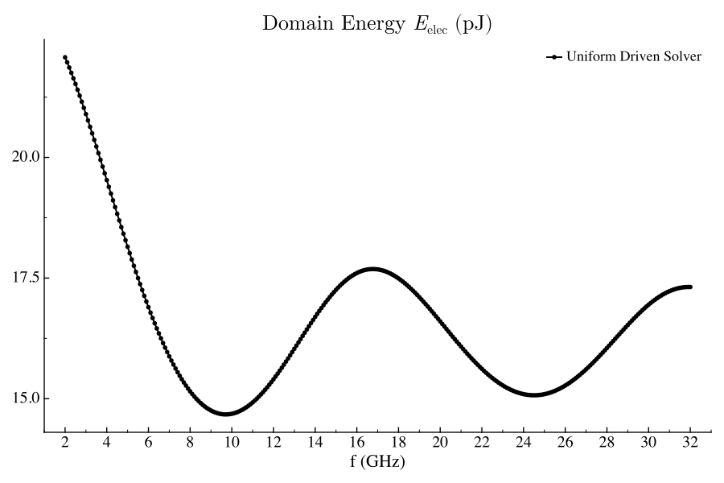
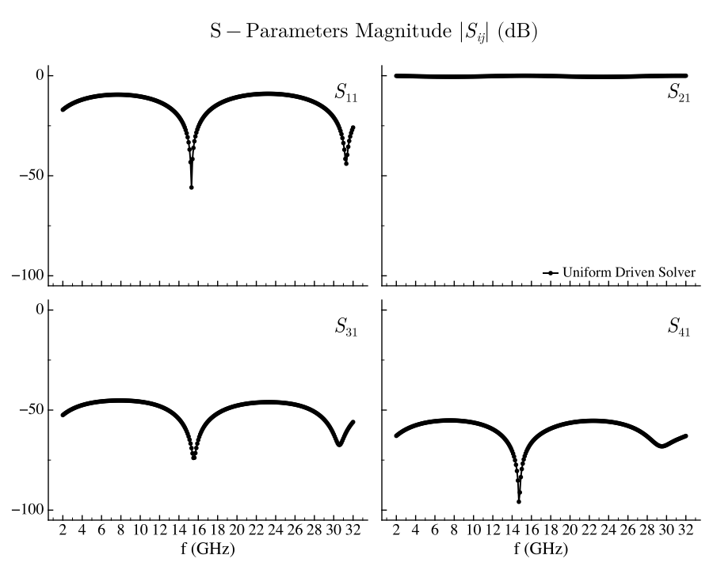
For the adaptive solver, the diamond markers show the internal sample frequencies used to build the PROM. These samples need not coincide with the output grid, except for required boundary or user-forced samples.
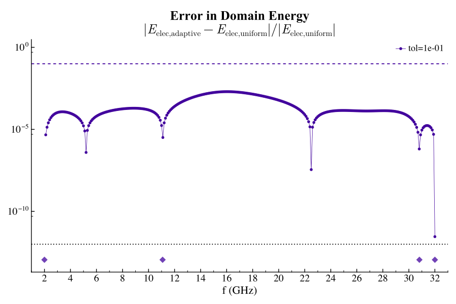
As "AdaptiveTol" is tightened, Palace adds more internal samples and the error against the uniform reference generally decreases.
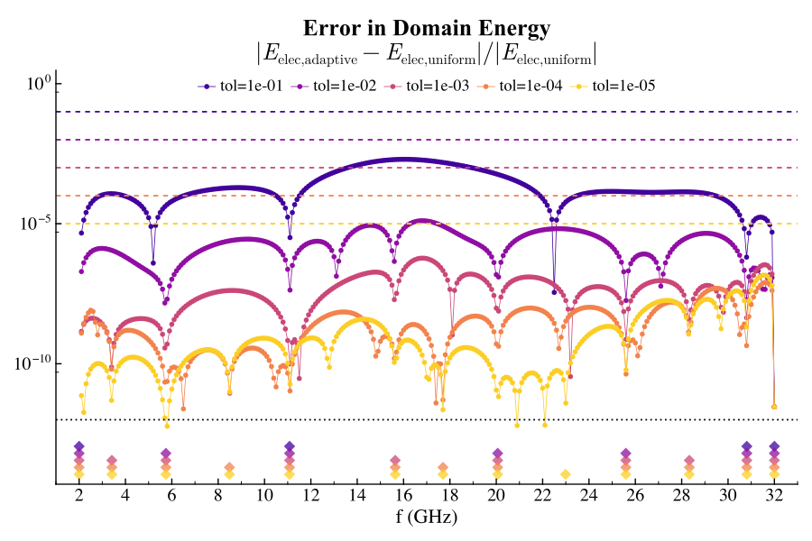
The pointwise relative error for S-parameters can look large when the reference value is small. In the CPW example, some scattering parameters are tiny over much of the band, so relative error alone can exaggerate visually small absolute differences.
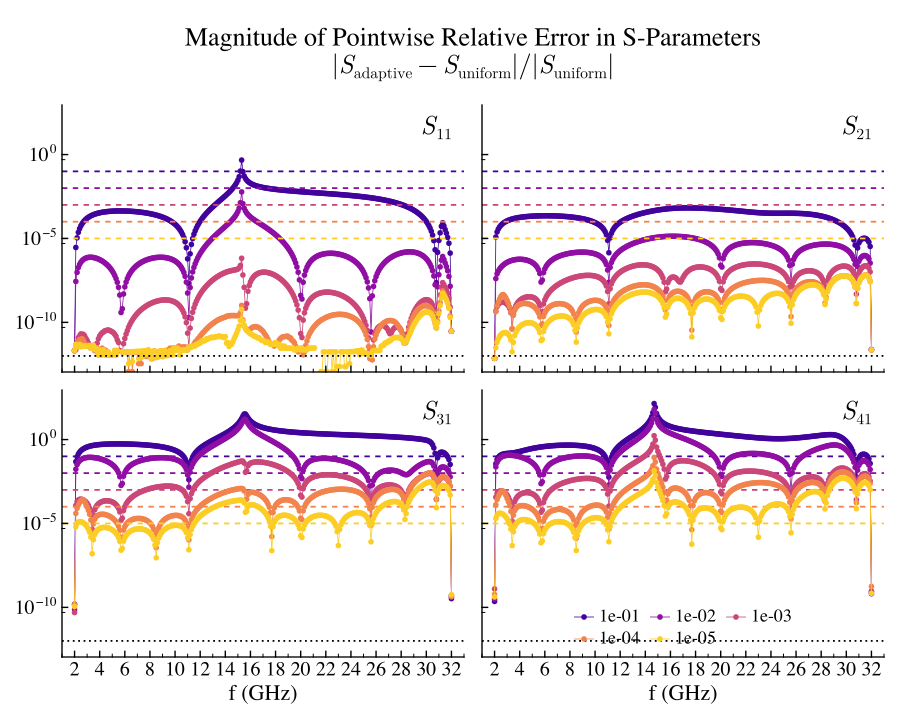
A complementary view is the absolute error normalized by an RMS scale for the reference S-parameter over the frequency range:
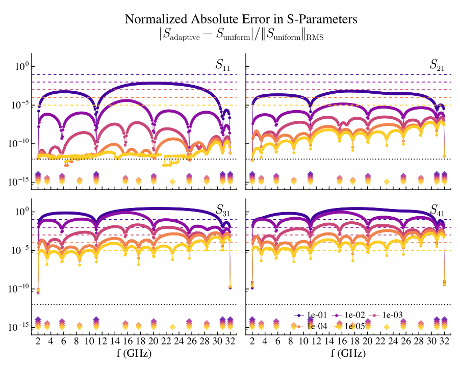
The adaptive error indicator does not have to decrease monotonically. The convergence memory parameter exists because an estimator can occasionally look converged before the next samples would reveal a larger error.
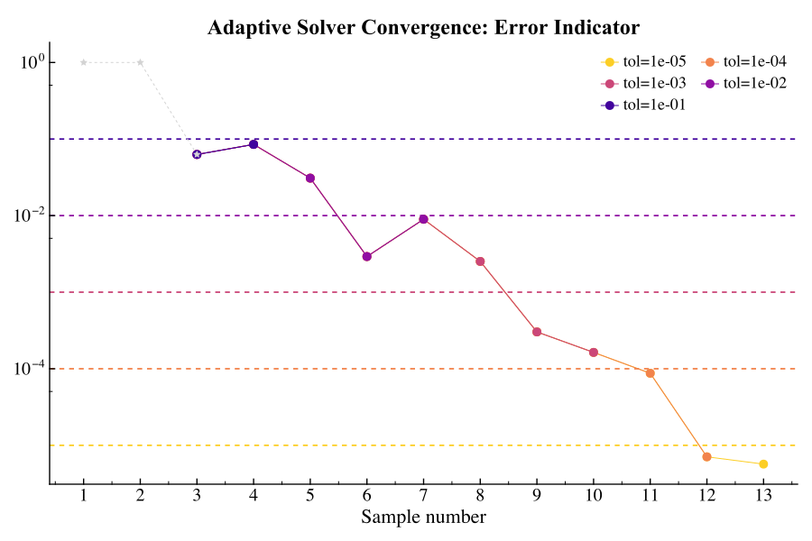
Transmon example
The transmon part of this guide uses the same geometry as the transmon eigenmode example, but runs driven simulations by exciting the two resistive feedline ports. The files are in examples/transmon/:
transmon_tutorial_driven.json: driven simulation template.transmon_tutorial_driven.jl: runs the uniform and adaptive simulations.transmon_tutorial_driven_plots.jl: regenerates the plots below.
The model contains resonant modes near the driven frequency band, so the response is more structured than in the CPW example. This is a useful case for adaptive sampling: the PROM can place full solves near the frequencies that most influence the response.
The uniform driven sweep resolves the electric energy and the feedline S-parameters:
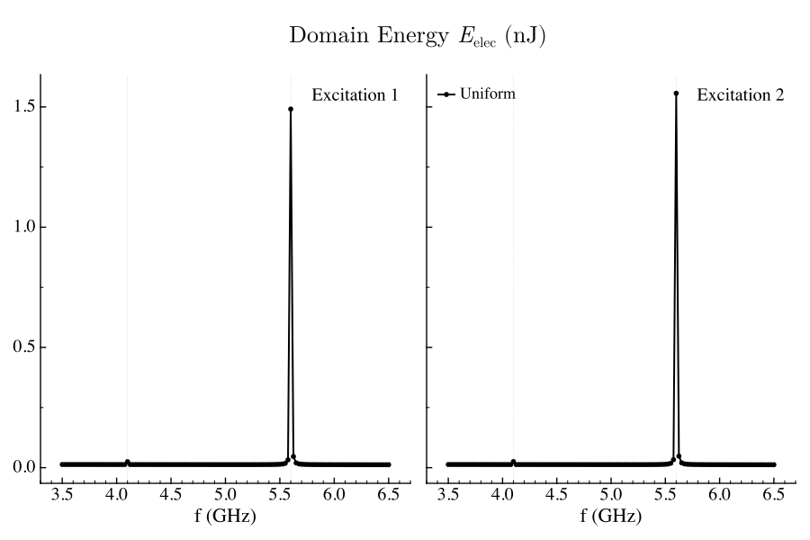
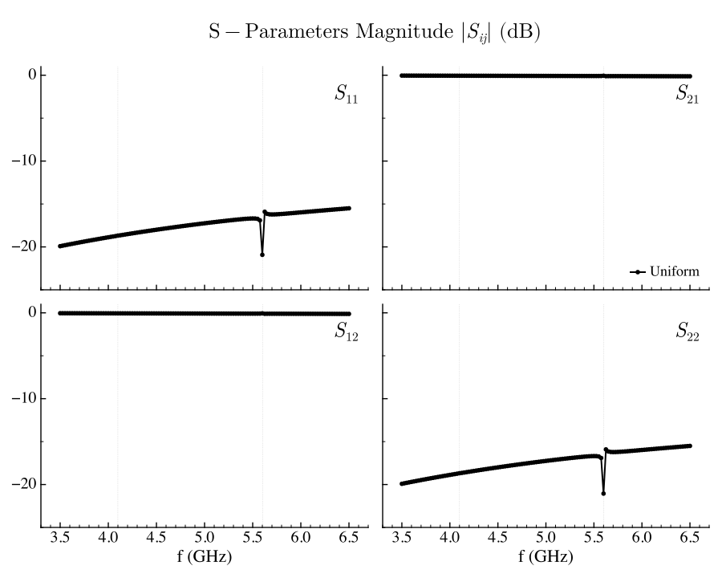
The adaptive error is largest near resonant features and decreases as the tolerance is tightened. The sample locations become more structured than in the CPW example because the response is influenced by nearby poles.
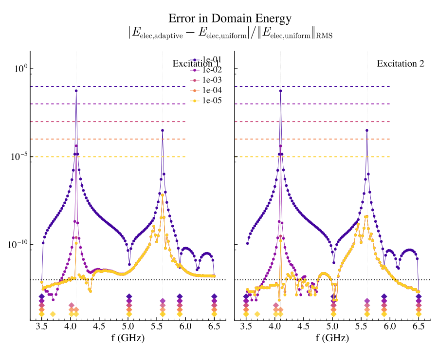
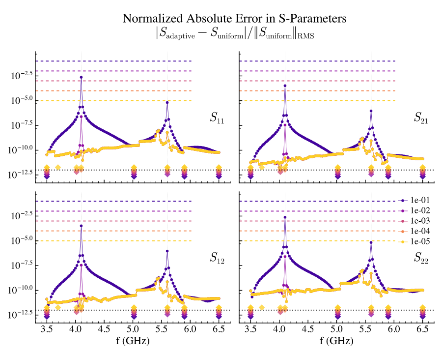
The uniform reference can also lose accuracy near high-$Q$ poles because the full system is more poorly conditioned there. Tightening only the adaptive tolerance is not useful if the underlying full solves are themselves inaccurate.
Regenerating the plots
The committed plots are snapshots. To regenerate them, first run the simulations, then run the plot scripts:
julia --project=examples -e 'include("examples/cpw/cpw_tutorial_lumped_driven.jl"); generate_cpw_lumped_driven_data(num_processors=4)'
julia --project=examples -e 'include("examples/transmon/transmon_tutorial_driven.jl"); generate_transmon_driven_data(num_processors=4)'
julia --project=examples examples/cpw/cpw_tutorial_lumped_driven_plots.jl
julia --project=examples examples/transmon/transmon_tutorial_driven_plots.jlThe scripts write SVGs to docs/src/assets/examples/ by default.